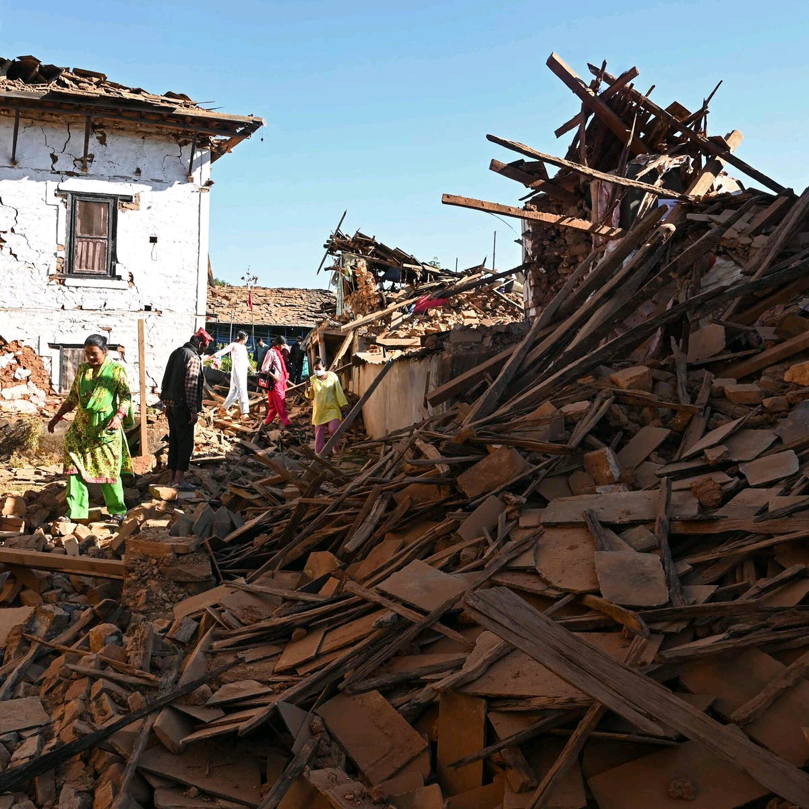

An Earthquake strikes Karnali province,Nepal,leaving more than 150 people dead
Thousand of families were left under the open sky as rescuers searched for survivors in the mountainous villages where the earthquake struck.
Read moreThousand of families were left under the open sky as rescuers searched for survivors in the mountainous villages where the earthquake struck.
Read moreTens of thousands of demostrators gather on the National Mall in Washington, D.C to condemn the rise in antisemitism during the war the call for the release of Hamas-held hostage.
Read more
Metabolic risk factors and alcohol fuel higher rates of fatty liver disease.Eating a correct balanced diet is advisable
Read moreThey include Coconut water,Zobo,Kunu,Swam bottled water,Adoyo
Read more
A career is the sum of your professional journey. Many people embark on a career because it can help them achieve their goals, such as acquiring more knowledge and experience, taking on more responsibility, or earning higher salaries.
Read more